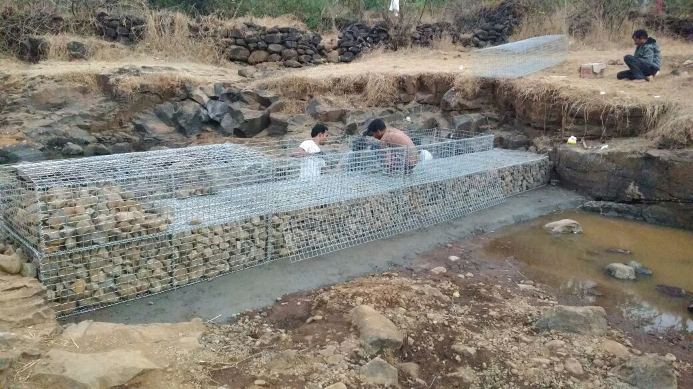
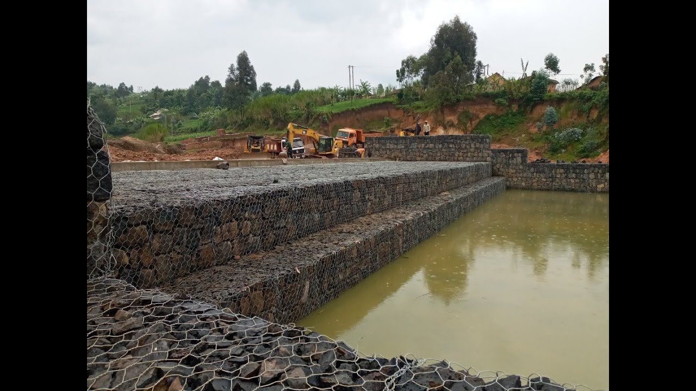
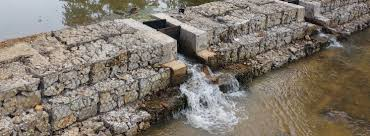
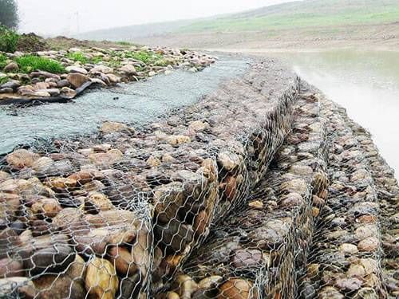
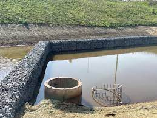
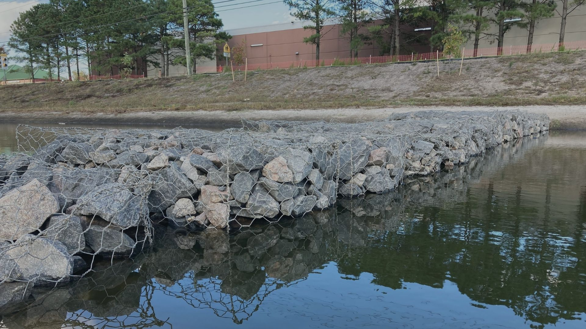
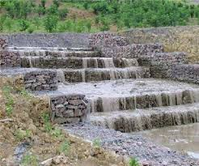
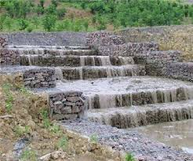
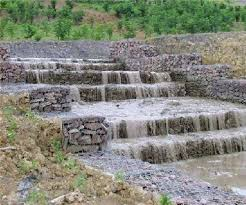

💧 Check Dam:- Check dams are small barriers built across seasonal rivers or streams to slow water flow and allow groundwater recharge. Constructed using stones, cement, or a combination of both. ✅ Benefits: Improves water storage, reduces soil erosion, supports agriculture.






 

